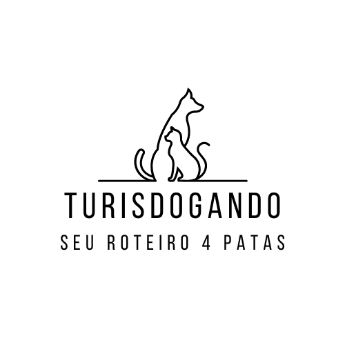
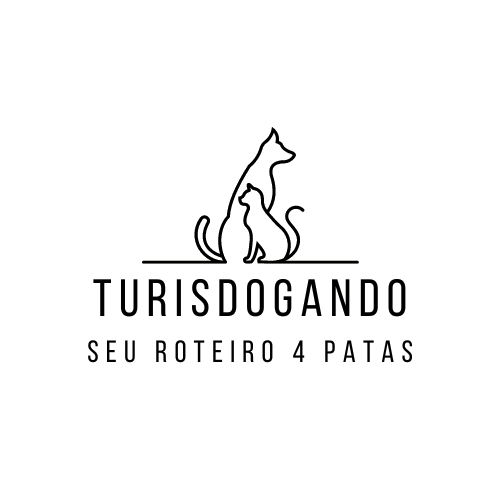
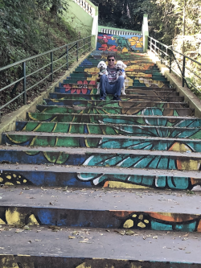
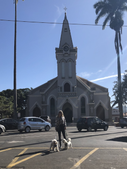
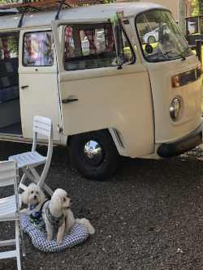
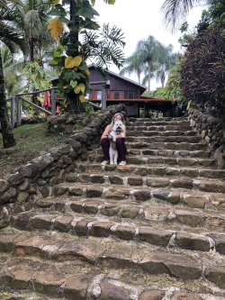
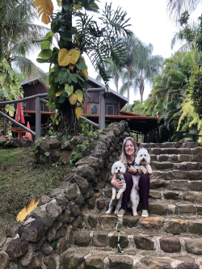
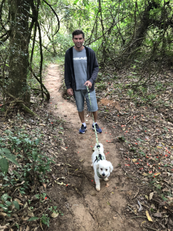
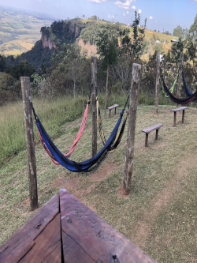

São Pedro - SP
Junho/2023

|
Três irmãos da família Teixeira de Barros - Joaquim, José e Luiz - adquiriram a Sesmaria do Pinheiros (lote de terra distribuído a um beneficiário em nome do Rei de Portugal com objetivo de cultivo e colonização), onde hoje se situa a cidade de São Pedro. Inicialmente chamada de Capela do Picadão devido a uma trilha com o mesmo nome, tinha como padroeiro São Sebastião. Logo os moradores, que não gostaram muito do nome da cidade, trocaram o padroeiro e assim também a cidade passou a se chamar São Pedro. A cidade comemora seu aniversário de fundação em 22/02. Possui uma área de 609.091 km² com elevação de 561 m. População: 35.980 (2020) Em São Pedro, nossa viagem foi de Kombi e aproveitamos para conhecer a cidade. A cidade é deliciosamente agradável e tem muitas opções de lazer onde a maioria delas aceitam Pets. Escolhemos algumas delas. |
 Portico São Pedro
Portico São Pedro Entrada São Pedro
Entrada São Pedro- Escadaria do Cristo
 Bar na estrada do Cristo
Bar na estrada do Cristo Vista Cristo
Vista Cristo- Igreja Matriz
 Praça da Igreja
Praça da Igreja- Camping
- Escadaria Camping
- Escadaria Camping
- Trilha
- Tirolesa